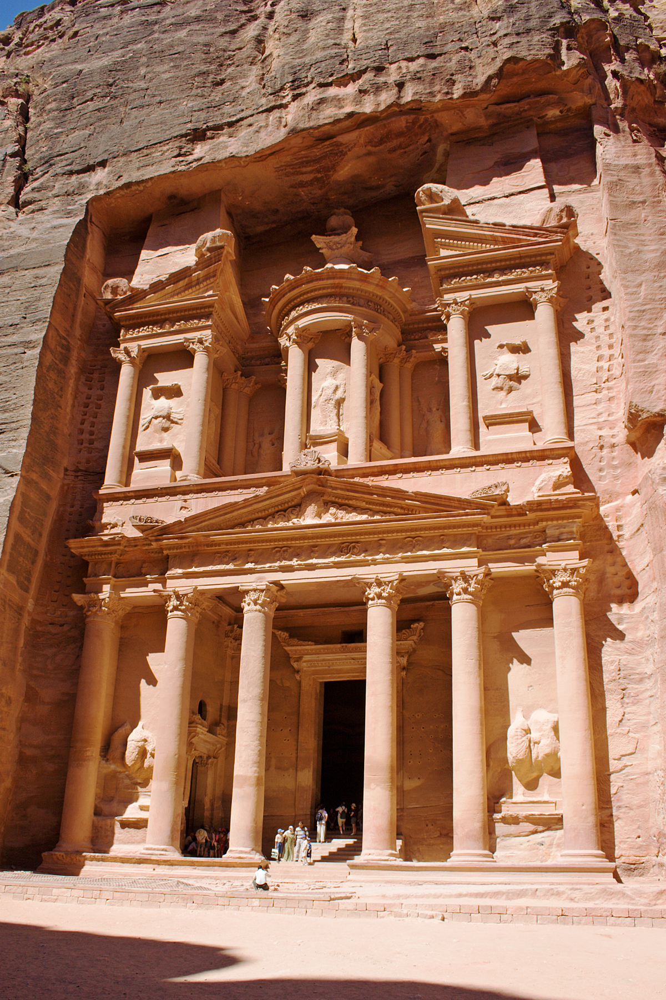

Petra to ruiny starożytnego miasta datowane na III w. p.n.e. – I w. n.e. Przez setki lat miejsce to było całkowicie nieznane, ukryte przed światem. O jego istnieniu nie wiedział nikt, poza duchami jego pierwotnych mieszkańców – starożytnego plemienia Nabatejczyków. Dziś jordańska Petra stanowi jedną z największych atrakcji turystycznych na świecie. Rozległe ruiny starożytnego miasta wykutego w stromych wapiennych skałach, zabarwionych odcieniami różu i czerwieni, zostały wpisane na listę Światowego Dziedzictwa UNESCO. O leżącej pośrodku pustyni architektonicznej perle napisano i zilustrowano tomy. Zachwyciła chyba wszystkich, którzy mieli okazję ją zobaczyć na żywo: historyków, naukowców, filmowców czy zwykłych ludzi, takich jak my.
